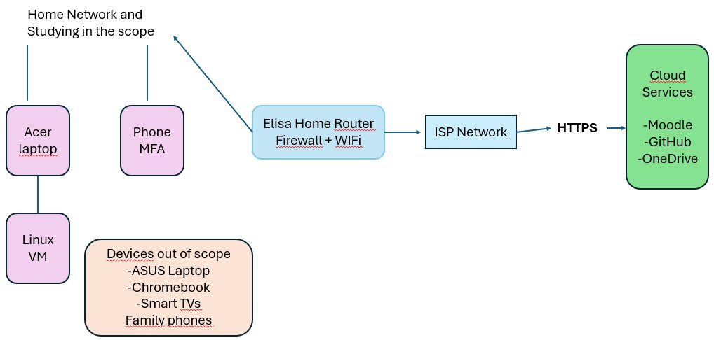

|
1. My ISMS scope of my home network and study environment includes the home network infrastructure, which includes the home Wi-Fi router provided by Elisa, the local firewall functionality and Wi-Fi configuration. The router represents the security boundary between the internal home network and public internet. The internal network is used for studying accessing some learning platforms which are cloud based. As for the devices used for the course work Acer laptop is used for assignments and studying and running development environments. Besides this also a Linux virtual machine that runs locally in my laptop and my mobile phone for authentication purposes for the Authenticator app when logging into Moodle or cloud services. For the information assets I use the course materials that are provided in Moodle and terokarvinen.com. For the cloud and external services I use GitHub for repositories used for the assignments, Cloud storage such as OneDrive as well as Moodle. 2. The devices that are excluded are my siblings' Chromebook and ASUS laptops, parents' and siblings' mobile phones and two Smart Tv's, one in the living room and one in one of my siblings'. I would also exclude Elisa's external network so the ISP infrastructure beyond the home router. These are devices that are not owned by me therefore I don't have the authority to apply security controls to them. T hese are also not used for the course exercises and they are irrelevant. The owners manage the risks that are included with these devices. 3. Key interfaces The cloud service interfaces include GitHub, OneDrive and Moodle. For the remote access, the router acts as the boundary between the home network and the public internet. There is also the local access to the virtual machine on the laptop. Suppliers include Elisa as the service provider of the internet, for the laptop and mobile phone the manufacturers and Github and Microsoft for the cloud service. As evidence add ons it could be a screenshot of the Elisa router settings, a screenshot of the virtual machine on my laptop, my github repository link and a screenshot of MFA |
 |
| Interested Party | Need | ISO 27001 | How to demonstrate? |
| Me | I need to continue the course assignments, and have access to the system and study data. I need to make sure that my laptop, VM and cloud services are available. Personal accounts are also needed to remain confidential until the end of the course | Understanding the needs and being aware of availability as well as the protection of systems. These include operation and contexts | Working virtual machine on the laptop and having successful access to Moodle. |
| Family members | Family members expect their privacy to be respected and not to not interrupt the internet. They also expect that the assignments do not affect their own devices. In this case, I have to not test devices outside the defined lab environment. | Controlling the activities during the assignments. These include operation and context | Not including family devices in the process of assignments. |
| Cloud service providers | For cloud service providers it is a must that accounts are protected, which in this case includes the multi factor authentication, with using strong passwords. Also illegal activities are not allowed when using cloud storage. | Usage in secure terms of different services and watching out for account security. These include operation and performance evaluation | MFA is enabled on the account with a strong password. |